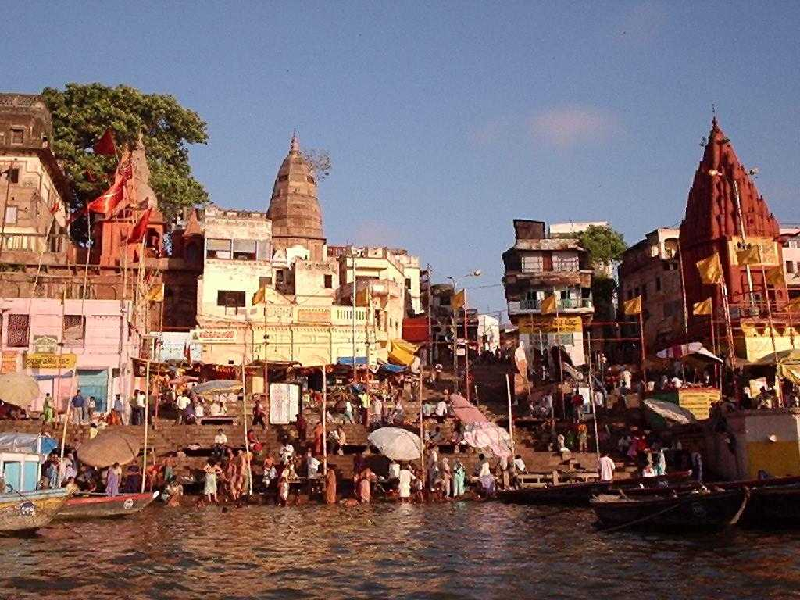
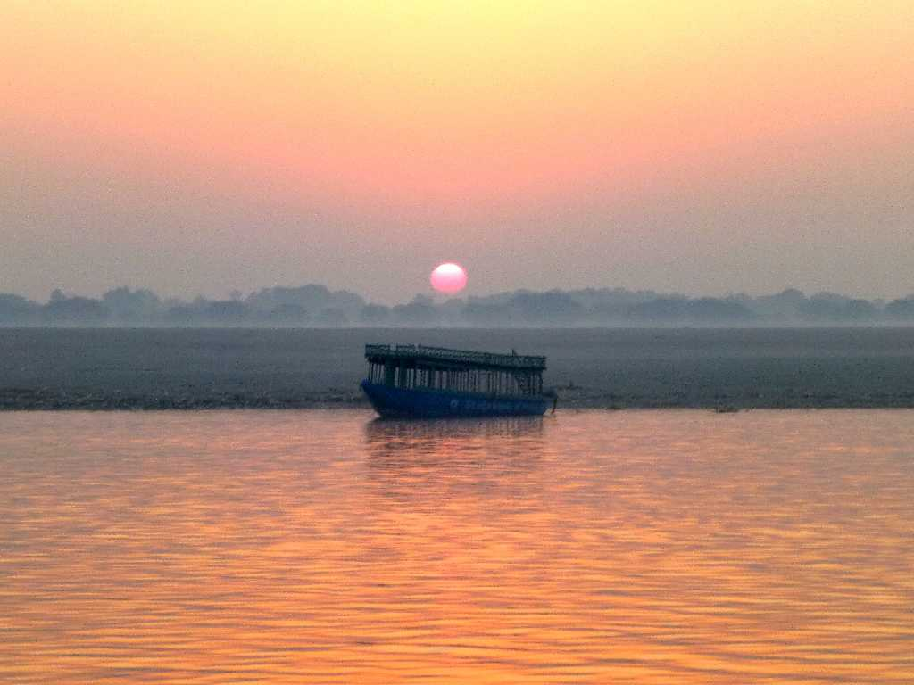
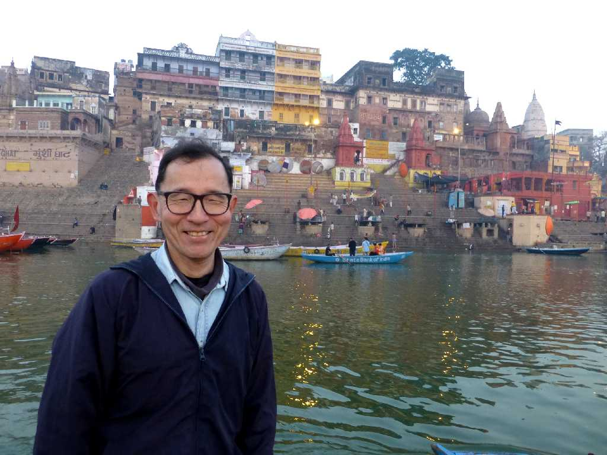
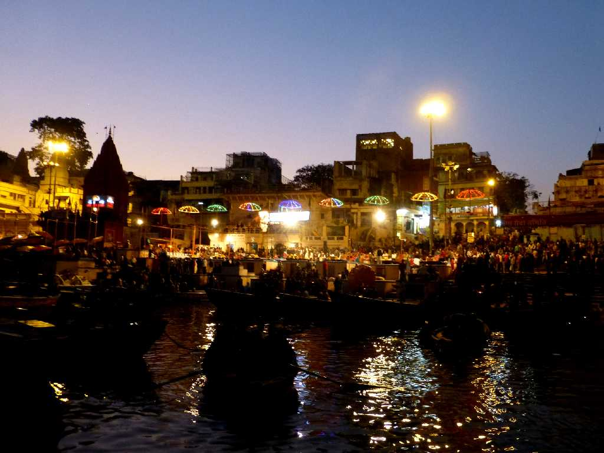

August 1985 Bathing Ganges River Benares
ヒンズー教の一大聖地でここで死後火葬にされガンジス河に流されることがヒンズー教徒にとっては最大の幸せ 舟に乗り換え沐浴風景などを見たが聖なる川ガンジスの流れがここでは迂回し南から北に向かっている

February 1 2015 6:49 Sunrise Ganges River
約３０年ぶりの再訪問でベナレスのガンジス河対岸から出る美しい日の出

February 1 2015 Benares

Ganga Aarti
豊かな恵みを与えてくれるガンジス河に感謝するための宗教儀式を見学